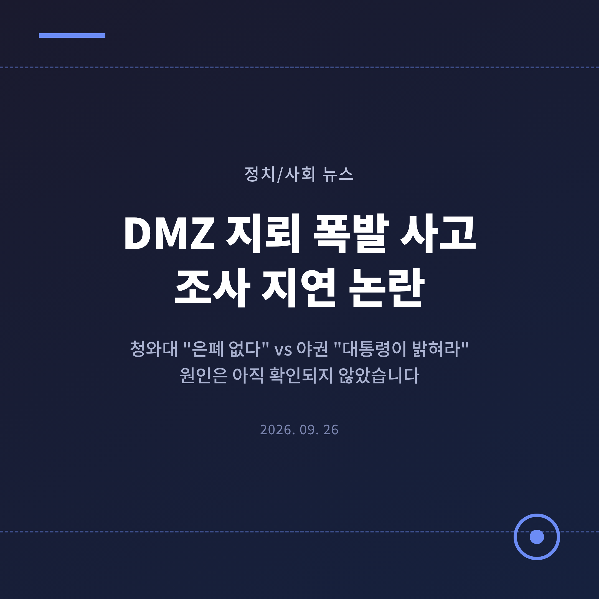
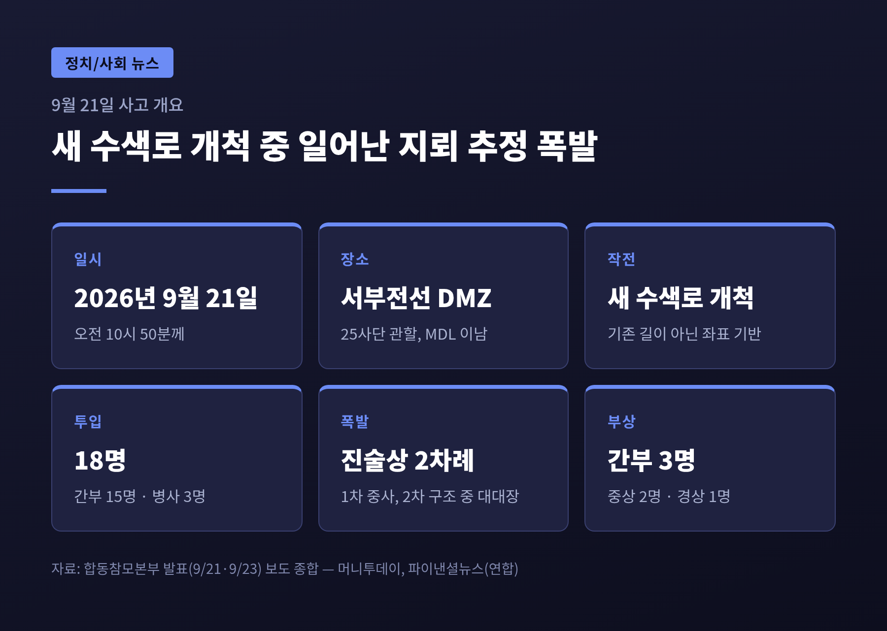
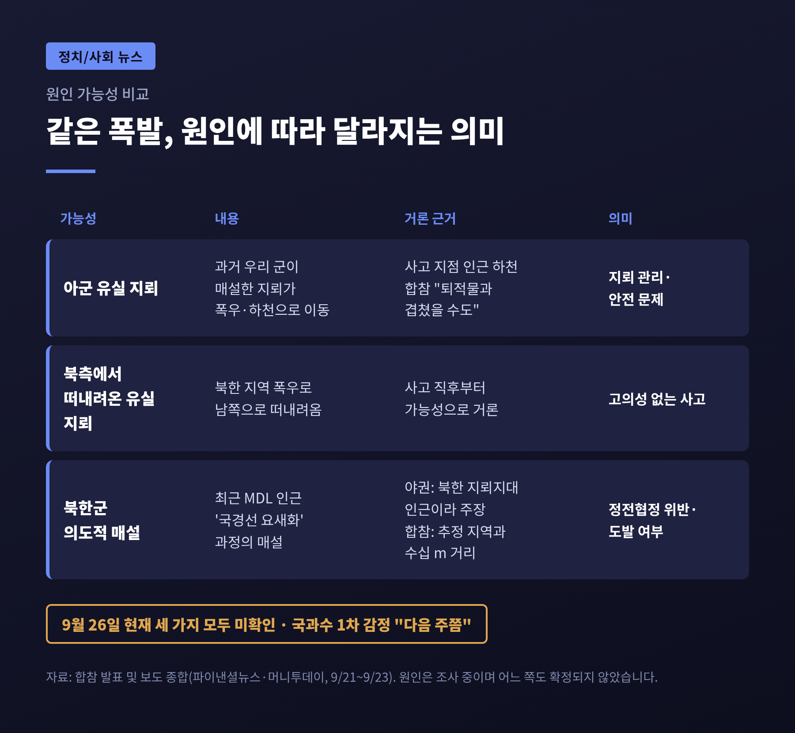
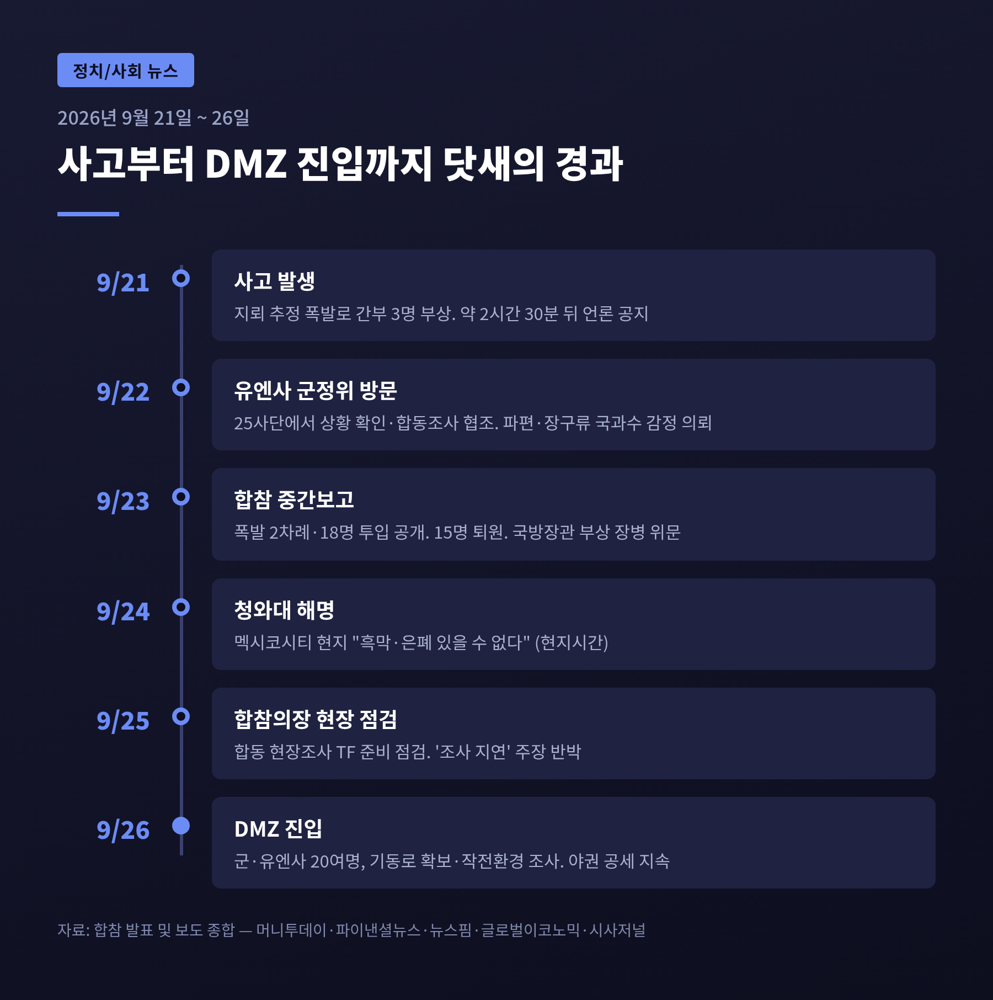
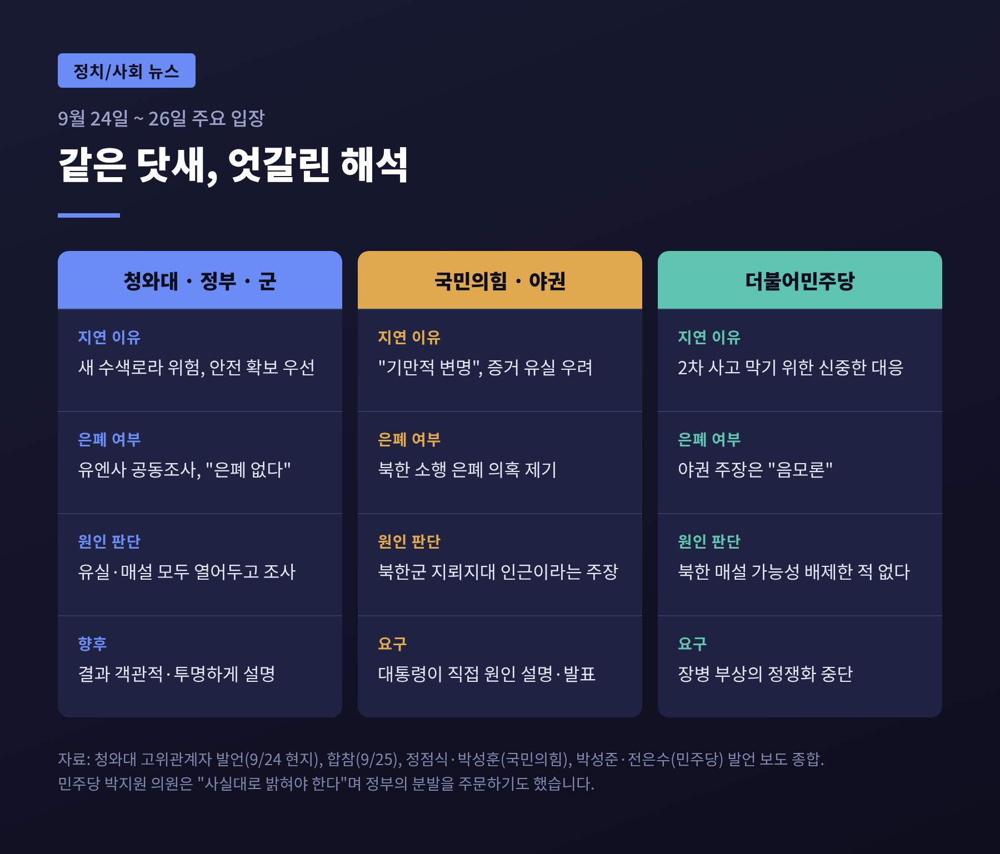
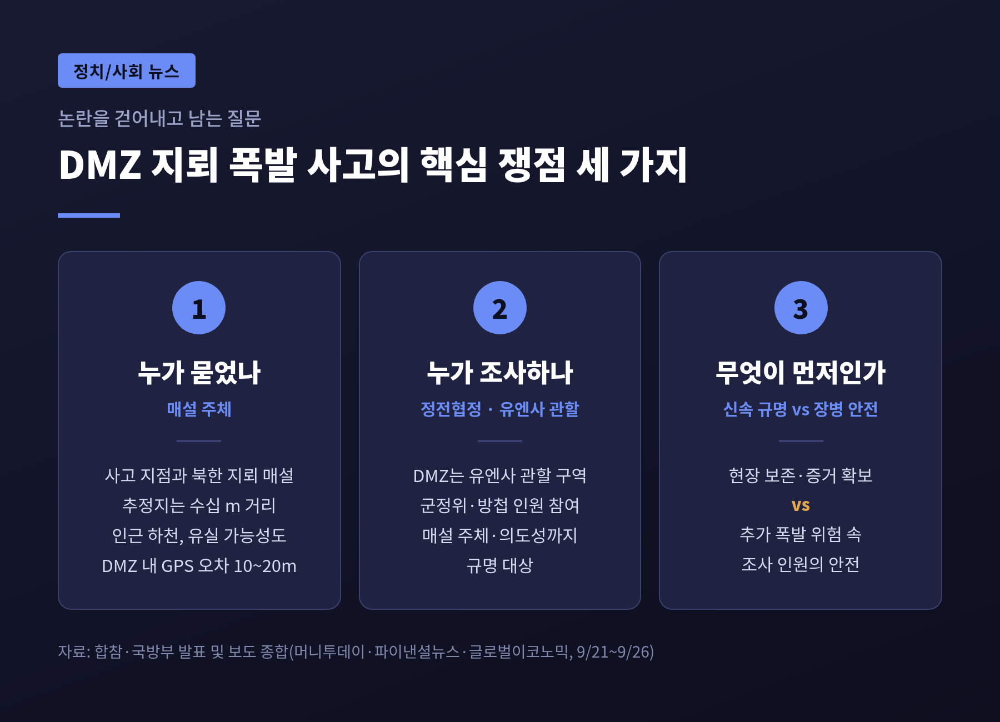

이번 글에서는 서부전선 DMZ 지뢰 폭발 사고와 그 뒤를 이은 조사 지연 논란을 정리해 보겠습니다.
결론부터 말씀드리면, 폭발물의 정체와 매설 주체는 9월 26일 현재까지 확인되지 않았습니다.
그 공백을 두고 정부·군의 "안전 우선" 설명과 야권의 "은폐 의혹" 제기가 맞서고 있습니다.
3줄 요약
사고는 9월 21일 오전 10시 50분께 발생했습니다.
장소는 25사단이 맡고 있는 서부전선 비무장지대(DMZ) 안, 군사분계선(MDL) 이남 지점입니다.
경기 파주 일대로 알려져 있습니다.
당시 작전은 평소 다니던 길이 아니었습니다.
좌표만 가지고 새 수색로를 뚫으며 MDL 쪽으로 접근하는 '수색로 개척작전'이었습니다.
목적은 유엔군사령부(유엔사)의 현장조사를 앞두고 안전한 통로를 미리 확보하는 것이었습니다.
투입 인원은 간부 15명과 병사 3명, 모두 18명이었습니다.
지뢰 개척·예초·엄호로 역할을 나눴습니다.
장병들의 진술에 따르면 폭발은 두 차례였습니다.
선두에서 길을 내던 공병 중사가 먼저 다쳤고, 그를 구하려 움직이던 수색대대장(중령)이 두 번째 폭발에 휘말렸습니다.
다만 합참은 몇 개가 터졌는지는 아직 모른다는 단서도 달았습니다.
부상자들은 방탄조끼와 지뢰덧신 등 방호장구를 규정대로 갖춘 상태였습니다.
그럼에도 수술이 필요한 중상을 피하지 못했습니다.

9월 23일 합참 중간보고 기준으로 정리하면 이렇습니다.
| 구분 | 인원 | 상태 |
|---|---|---|
| 중상 | 2명 (수색대대장 중령, 중사) | 수술 후 회복 중 |
| 경상 | 1명 (간부) | 입원 치료 |
| 정밀검진 | 15명 | 22~23일 퇴원, 필요 시 추가 진료 |
중상자 두 사람은 우리 군 메디온 헬기(KUH-1M)로 DMZ 안에서 곧바로 끌어올려 후송됐습니다.
합참은 25일 '미군 헬기로 후송했다'는 일부 주장에 대해 사실이 아니라고 밝혔습니다.
강신철 국방부 장관은 23일 국군외상센터를 찾아 부상 장병과 가족을 만났습니다.
전우를 구하다 다친 이들을 "진정한 영웅"이라 부르며, 치료와 지원을 끝까지 책임지겠다고 했습니다.
동료를 구하려다 다친 지휘관, 그리고 맨 앞에서 길을 내던 부사관.
이 사고를 이야기할 때 가장 먼저 기억해야 할 사람들입니다.
MDL 이남 DMZ에서 지뢰로 중상자가 나온 것은 2015년 8월 목함지뢰 사건 이후 약 11년 만입니다.
당시에는 북한군이 MDL 남쪽으로 440m를 넘어와 지뢰를 묻었고, 우리 부사관 두 명이 다리를 잃었습니다.
가장 최근의 DMZ 폭발 사고는 2025년 11월 파주에서 있었고, 그때는 하사 한 명이 발목을 다쳤습니다.
이번 사고가 특히 민감한 이유는 원인이 곧 정치·안보 판단으로 이어지기 때문입니다.
유실된 지뢰라면 안전관리의 문제로 남습니다.
누군가 의도적으로 묻은 것이라면 정전협정 위반과 도발의 문제가 됩니다.
같은 폭발이라도 원인에 따라 이후 대응이 전혀 달라지는 셈입니다.

야권이 가장 문제 삼는 것은 '닷새'라는 시간입니다.
정부와 군은 이 시간을 안전 확보의 과정이라고 설명합니다.
이재명 대통령의 멕시코 국빈방문에 동행한 청와대 고위관계자는 24일(현지시간) 멕시코시티에서 입장을 밝혔습니다.
요지는 세 가지입니다.
합참도 25일 같은 취지로 반박했습니다.
유엔사가 즉시 조사를 요구했는데 시간을 끌었다는 주장은 사실이 아니며, 양측이 처음부터 "안전대책 확보가 우선"이라는 데 공감했다는 설명입니다.
같은 날 진영승 합참의장은 25사단을 찾아 통신·예행연습·안전대책을 꼼꼼히 준비하라고 주문했습니다.

국민의힘의 시선은 다릅니다.
위험하다는 설명이 오히려 시간을 끄는 명분이 되고 있다는 것입니다.
정점식 원내대표는 26일 페이스북에서 대통령이 직접 "육하원칙에 입각해" 원인을 발표하라고 요구했습니다.
'다치면 느그 아들' 같은 말이 다시 나오지 않게 하겠다던 대통령의 약 3주 전 발언을 인용하며, 국방부와 군이 부상 장병을 그렇게 대하고 있다고 비판했습니다.
박성훈 수석대변인은 현장조사를 미루는 것이 증거가 사라지기를 기다리는 것이라며 "은폐 공작"이라는 표현까지 썼습니다.
무소속 한동훈 의원은 유엔사의 즉시 조사 요구를 누가 거부하게 했는지 밝히라고 했습니다.
이 주장은 합참이 이미 사실과 다르다고 반박한 부분이기도 합니다.
여당 안에서도 목소리가 나왔습니다.
민주당 박지원 의원은 사실대로 밝혀야 국민이 이해한다며 정부 인사들의 분발을 주문했습니다.
반면 민주당 지도부는 국민의힘의 주장을 "안보 불안을 부추기는 음모론"으로 규정했습니다.
전은수 원내대변인은 정부와 군이 북한 매설 가능성을 배제한 적이 없다고 강조했습니다.
장병의 부상을 정쟁의 소재로 삼지 말라는 주문도 덧붙였습니다.

논란을 걷어내고 보면, 남는 질문은 세 가지로 좁혀집니다.
첫째, 누가 묻었나.
합참에 따르면 사고 지점은 북한군 지뢰 매설 추정 지역과 수십 미터 떨어져 있습니다.
인근에 하천이 흘러 떠내려온 지뢰일 가능성도 거론됩니다.
반면 국민의힘 유용원 의원은 사고 지역이 북한군이 MDL을 넘어 지뢰지대를 만든 곳 인근이라고 주장했습니다.
두 차례 폭발이 매설을 뜻하느냐는 질문에 합참은 "계획된 지뢰일 수도, 퇴적물과 함께 겹쳤을 수도 있다"고 답했습니다.
국방부 장관은 DMZ 안에서는 위성항법(GPS) 오차가 10~20m까지 생길 수 있다고 했습니다.
정확한 위치 판단부터 간단하지 않다는 뜻입니다.
둘째, 누가 조사하나.
DMZ는 정전협정에 따라 유엔사가 관할하는 구역입니다.
이번 조사에도 유엔사 군사정전위원회와 방첩 관련 인원이 참여하며, 매설 주체와 의도성까지 규명 대상에 올라 있습니다.
청와대가 '은폐 불가'의 근거로 유엔사를 든 것도 이 때문입니다.
다만 제3자가 참여한다는 사실만으로 조사 속도에 대한 의문이 해소되지는 않았습니다.
셋째, 무엇이 먼저인가.
현장 보존과 신속한 규명이 중요하다는 주장과, 추가 폭발 위험 속에 또 다른 장병을 들여보낼 수 없다는 주장이 부딪힙니다.
추석 연휴 중 비 소식으로 현장 훼손을 걱정하는 목소리도 나왔습니다.
두 가치 모두 가볍지 않다는 점에서, 이 쟁점은 어느 한쪽이 틀렸다고 단정하기 어렵습니다.

예전엔 "위험해서 못 들어간다"는 설명과 "왜 안 들어가느냐"는 비판이 평행선을 달렸습니다.
이제는 첫걸음이 떼어졌습니다.
26일 오후 합참 합동 현장조사 TF와 유엔사 군정위 관계자, 조사기관, 작전 병력 20여 명이 DMZ에 들어갔습니다.
이번 진입은 본조사를 위한 이동로 안전성과 감시·통신 상태를 확인하는 단계였습니다.
21일 작전에 참여했던 장병 일부도 자원해 함께했다고 합참은 전했습니다.
앞으로 지켜볼 대목은 이렇습니다.
정부는 결과를 투명하게 설명하겠다고 약속했습니다.
야권은 그 약속이 얼마나 빨리 지켜지는지를 따지고 있습니다.
결국 논란의 무게는 조사 결과가 얼마나 신뢰를 얻느냐에 달려 있습니다.
아직 모르는 것이 많다는 점도 분명히 적어둡니다.
폭발물의 종류, 매설 시점, 매설 주체 모두 지금은 확인되지 않은 영역입니다.
정리하면 이렇습니다.
이번 논란의 한가운데에는 "무엇이 터졌는가"라는 아직 답이 없는 질문이 있습니다.
정부의 설명도, 야권의 의혹 제기도 그 답이 나와야 비로소 검증될 수 있습니다.
그 사이 병상에서 회복 중인 장병들이 있습니다.
누가 옳았는지를 가리는 일보다 먼저 필요한 것은, 그들이 다친 이유를 정확히 밝히는 일일 것입니다.